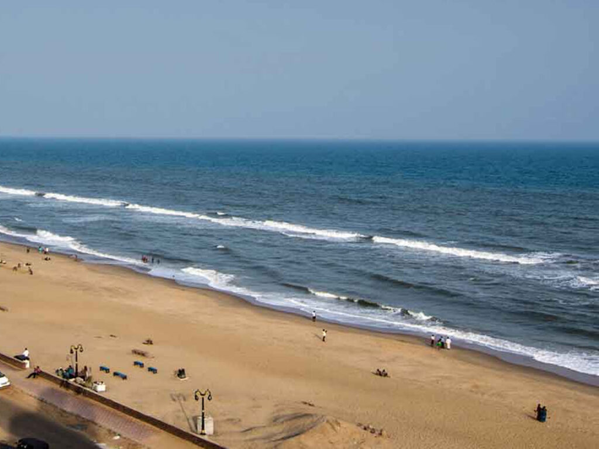

Puri is a coastal city and a municipality in the state of Odisha in eastern India.The beach at Puri, known as the "Ballighai beach, at the mouth of Nunai River", is 8 kilometres (5.0 mi) away from the town and is fringed by casurina trees.[12] It has golden yellow sand. Sunrise and sunset are pleasant scenic attractions here.[65] Waves break in at the beach which is long and wide. 
Prev . . Next